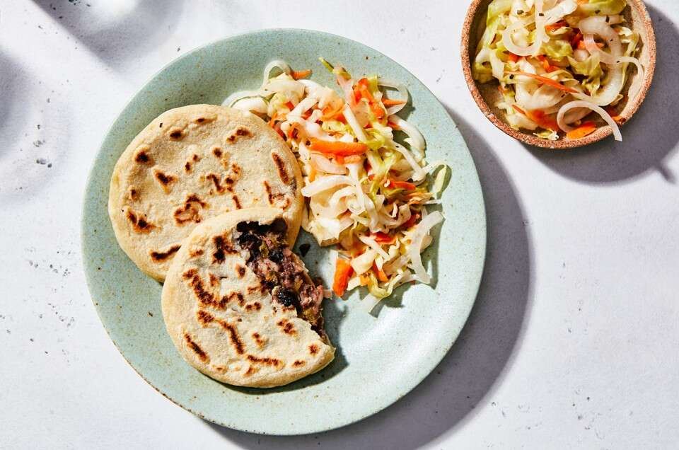

Pupusas Recipe

Wait Till You Try This Popular Salvadorean Dish
This easy pupusa recipe teaches you how to make bean and
cheese-filled tortillas. These pupusas come together in
under 10 minutes and they are easy to customize with your
favorite fillings.
Ingredients
- Masa Harina
- Water
- Cheese
- Refied Beans
- Oil
- Salt
Steps To Making Pupusas
- Prepare the dough
- Shape and stuff the pupusas
- Cook
Return to Homepage